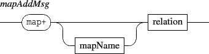

Next: 11. Score specific messages
Up: 10. Synchronization
Previous: 10. Synchronization
Contents
Index



Synchronizing a component A to a component B has the following effect:
- A position (x,y) is modified to match the B time position corresponding to A date.
- depending on the optional syncStretch, A width and/or height are modified to match the corresponding B dimensions (see below).
- if A date has no graphic correspondance in B mapping (the date is not mapped, or out of B mapping bounds ), A won't be visible.
The synchronization alignment modes have the following effects on the slave y position:
- syncOver: the center of the slave is aligned to the master center.
- syncTop: the bottom of the slave is aligned to the top of the master.
- syncBottom: the top of the slave is aligned to the bottom of the master.
The default synchronization mode is syncOver.
The synchronization stretch modes have the following effects on the slave dimensions:
- h: the slave is horizontally stretched to align its begin and end dates to the corresponding master locations.
- v: the slave is vertically stretched to the master vertical dimension.
- hv: combines the above parameters.
By default, no stretching is applied.
The optional 'mapName' string argument specifies which mapping of the master object should be used (see map message). If the master doesn't have a mapping with the specified 'mapName', the slave object won't be visible.
Not specifying the map name is equivalent to an empty name mapping.
Next: 11. Score specific messages
Up: 10. Synchronization
Previous: 10. Synchronization
Contents
Index
Grame - Interlude project [ANR-08-CORD-010]